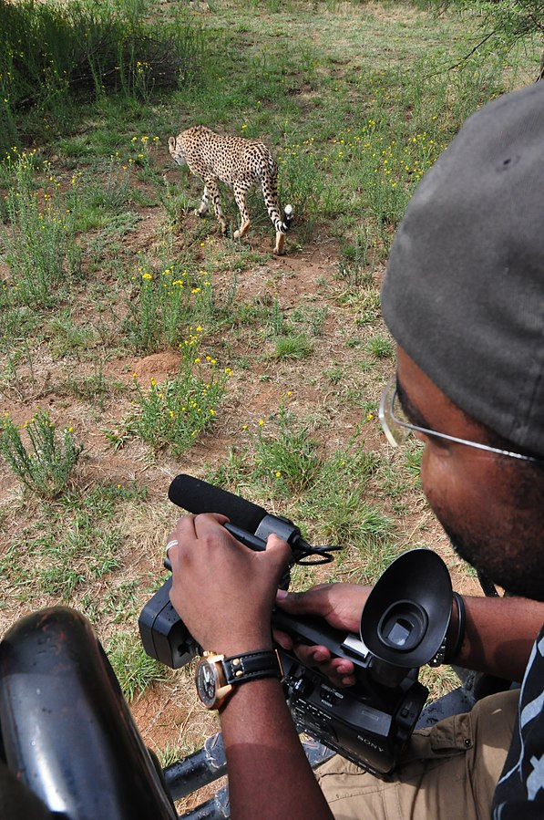

A nature documentary or wildlife documentary is a genre of documentary film or series about animals, plants, or other non-human living creatures. Nature documentaries usually concentrate on video taken in the subject's natural habitat, but often including footage of trained and captive animals, too.
A nature documentary or wildlife documentary is a genre of documentary film or series about animals, plants, or other non-human living creatures. Nature documentaries usually concentrate on video taken in the subject's natural habitat, but often including footage of trained and captive animals, too. Sometimes they are about wildlife or ecosystems in relationship to human beings. Such programmes are most frequently made for television, particularly for public broadcasting channels, but some are also made for the cinema. The proliferation of this genre occurred almost simultaneously alongside the production of similar television series which is distributed across the world.
History
In cinema
Robert J. Flaherty's 1922 film Nanook of the North is typically cited as the first feature-length documentary.[1] Decades later, Walt Disney Productions pioneered the serial theatrical release of nature-documentaries with its production of the True-Life Adventures series, a collection of fourteen full length and short subject nature films from 1948 to 1960.[2] Prominent among those were The Living Desert (1953) and The Vanishing Prairie (1954), both written and directed by James Algar.
The first full-length nature-documentary films pioneering colour underwater cinematography were the Italian film Sesto Continente (The Sixth Continent) and the French film Le Monde du silence (The Silent World). Directed by Folco Quilici Sesto Continente was shot in 1952 and first exhibited to Italian audiences in 1954.[3] The Silent World, shot in 1954 and 1955 by Jacques Cousteau and Louis Malle, was first released in 1956.[4]
In television
CLICK HERE TO GO HOME PAGE